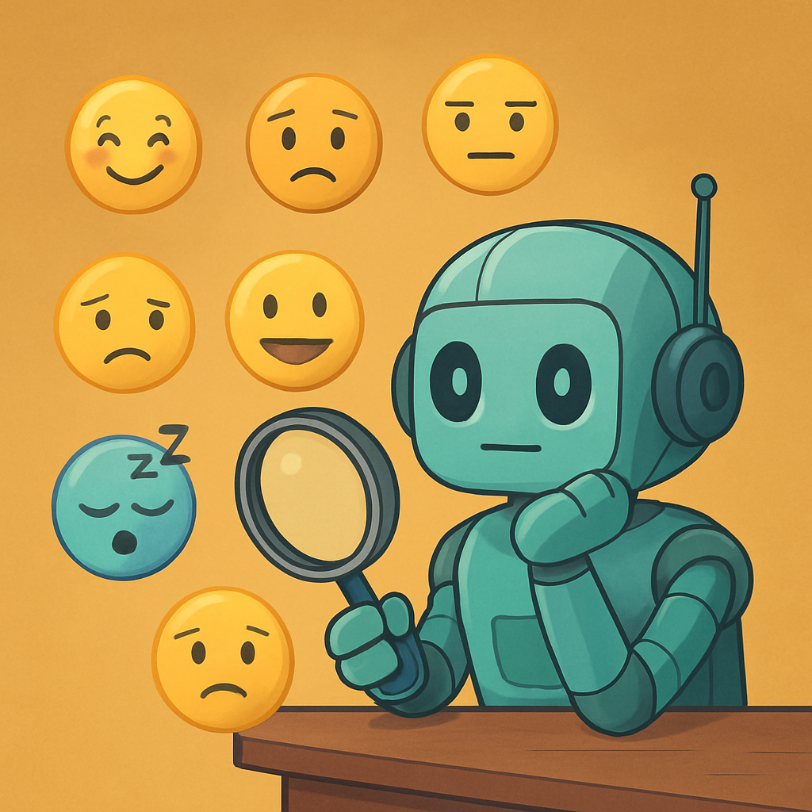

Emojis vs. Emotions: Can a Model Read the Room from Just 😊 or 😒?
Introduction
Do large language models actually “feel†the tiny faces we fling into our chats? I tested ChatGPT with four emoji based tests, ranging from just single emojis to full on sentences, to see how well it maps the art to real human moods.

Experiment Setup
- Model: GPT-4o
- Method: Present the same emoji(s) in different context/framing, then study how the model labels emotion, tone, and intent.
Case 1 – Just an Emoji
First prompt: What emotion does 😊 represent?
GPT-4o chat response 1:
😊 usually represents happiness, warmth, or contentment. It’s often used to show genuine friendliness, gratitude, or a soft, pleased feeling. Would you like me to also show how it slightly differs from similar emojis like 🙂 or �
Observation: Straightforward and correct when directly asked what an emoji means (with no context or faming).
Case 2 – Emoji Overrides Words
Second prompt: I had a great day 😒
GPT-4o chat response 2:
That comes across as sarcastic — the 😒 emoji (unamused face) usually shows annoyance, boredom, or mild irritation. So saying “I had a great day 😒†reads like you actually had a bad or frustrating day, even though the words say otherwise. Want to tell me what happened?
Observation: Chat spots the contradiction and explains sarcasm; good contextual read.
Case 3 – Multiple Emojis to Convey a Message
Third prompt: Interpret this sequence: 🉠â¡ï¸ 😅 â¡ï¸ 💤
GPT-4o chat response 3:
This sequence feels like: 🉠(Excitement/celebration) → 😅 (Relief/nervous laughter/exhaustion from the fun) → 💤 (Tiredness/falling asleep afterward) It basically tells the story of partying hard, getting worn out, and then crashing into sleep. Was this about your day? ğŸ‰ğŸ˜…💤
Observation: Chat came up with a coherent narrative from just three symbols. Chat’s storyline is pretty accurate I would say.
Where It Slips Up!
Fourth prompt: Explain why I’d use 😠after “Sure, that’s your best idea.â€
GPT-4o chat response 4:
The 😠emoji shows polite agreement.
Observation: 😠often implies teasing or is used to represent a smug look. Chat missed the flirtatious/ironic meaning at first. When asked again Chat corrected itself.
Key Takeaways!
- Single emoji interpretation is near perfect.
- Context integration works… mostly. Chat detects sarcasm when emojis conflict with literal words.
- Sequential emojis produce logical narrative arcs.
- Nuance gaps remain. Subtler connotations (😏, 😬) expose cracks in the ChatGPT’s cultural grounding.
Why Does This Matter?
Customer service bots, mental health check-ins, and other tools increasingly rely on emoji cues. Misreading a 😠as pure agreement could derail tone or misclassify meanings when doing an analysis.